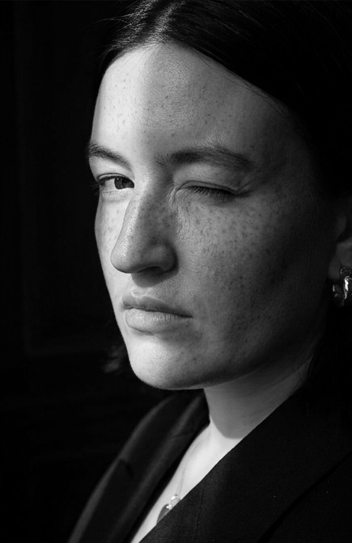
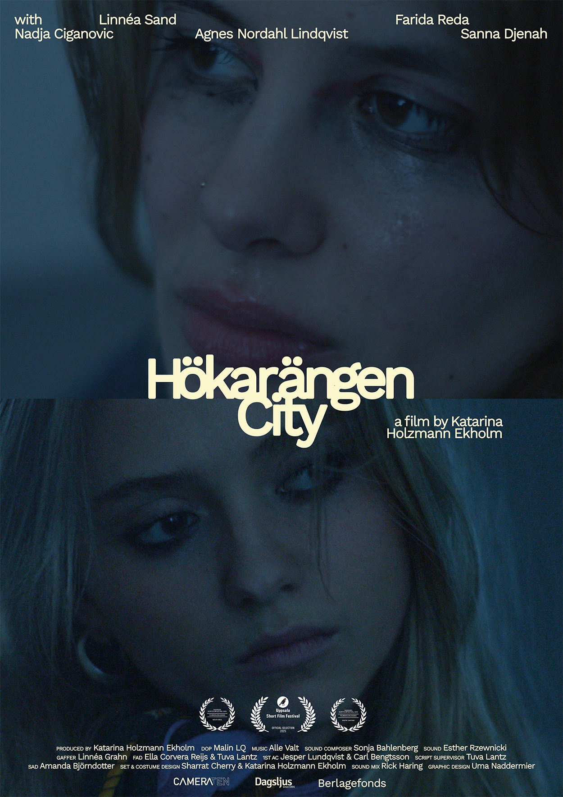

About
Katarina Holzmann Ekholm
Katarina Holzmann Ekholm is a film director from Gothenburg, Sweden. She graduated from the Gerrit Rietveld Academie in Amsterdam in 2024 with the short film Hökarängen City, which premiered at Eye Filmmuseum in Amsterdam and won Best Director and Best Casting at Sweden Short Film Festival 2025. Hökarängen City also competed in the national competition at the Uppsala International Short Film Festival.
Her most recent works are the shorts Cheese and Dough, filmed in Atlanta, GA, in collaboration with screenwriter Charles Rainey, premiering in 2026.
Works
Selected films as director
Curriculum Vitae
Katarina Holzmann Ekholm
Education
Filmography — Director
Filmography — Director's assistant & other
Selected works
Awards
Grants
Distribution
Film Screenings
Group Exhibitions
Hökarängen City

When Myra's friend Stacy finds herself in a challenging situation home alone, Myra decides to stay by her side despite her own responsibilities. As Myra navigates between her family duties, school and friendship, she wrestles with maintaining her own identity. Hökarängen City tells the story of Myra and Stacy, navigating a world devoid of adult presence.
Link upon request.
Cast
- Linnéa Sand
- Farida Reda
- Nadja Ciganovic
- Agnes Nordahl Lindqvist
- Sanna Djenah
- Sara Pejlare — Bodil (voice)
- Siri Winroth — Myra's little sister (voice)
- Micaela Gustafsson — Karoline, Social services (voice)
Crew
- Writer & Director — Katarina Holzmann Ekholm
- Produced by — Katarina Holzmann Ekholm
- Director of Photography — Malin LQ
- Editor & Colorist — Katarina Holzmann Ekholm
- Sound Composer — Sonja Bahlenberg
- Sound — Esther Rzewnicki
- Sound Mix — Rick Haring
- Gaffer — Linnéa Grahn
- 1st AD — Ella Corvera Reijs & Tuva Lantz
- 2nd AD — Amanda Björndotter
- 1st AC — Jesper Lundqvist & Carl Bengtsson
- Script Supervisor — Tuva Lantz
- Set- & Costume Design — Katarina Holzmann Ekholm & Sharrat Cherry
- Casting Director — Katarina Holzmann Ekholm & Amanda Björndotter
- Production Assistant — Karin Ekholm
- Chef — Esther Rzewnicki
- Graphic Design — Uma Naddermier
- Translation & Subtitles — Esther Rzewnicki
Awards
- Sveriges Kortfilmfestival — Best Director 2025
- Sveriges Kortfilmfestival — Best Casting 2025
Screenings
- Stakken, Stockholm 2025
- FALL FRUIT, Stockholm 2025
- Uppsala International Short Film Festival, Uppsala 2025
- Sveriges Kortfilmfestival, Stockholm 2025
- Eye Film Museum, Amsterdam 2024
- Gerrit Rietveld Academie Graduation Show, Amsterdam 2024
Distribution
- SEE NL Shorts 2025
- SEE NL Children's & Youth Films 2025
- Eye's Short Film Pool
Support & Thanks
Clothes from E_boutique, Medina Balesic · Car bag from Amanda Bellman
Equipment from Cameraten, Dagsljus
With support from Cameraten, Berlagefonds
Special thanks Dragan Nedeljkovic, Einar Thorén, Clara Vida, Simone Norberg, Scott Ramsell, my classmates & teachers at the Gerrit Rietveld Academie, Simone Bennett, Nirit Peled, Christopher Tym, Martin Grootenboer, Harry Heyink
Gerrit Rietveld Academie — Stockholm & Amsterdam, 2024
Boxed — The Series
Cheese
Boxed The Series is an episodic, serialized collection of three shorts about a creature of comfort — a pizza driver who delivers for everyone but himself.
Cast
- Charles Rainey
- Karen Aruj
- Demetrio SantaMaria
- Ashley Winfrey
Department
- Director of Photography — Jessica Silva
- Production Designer — Queenie Zhang
- Costume Designer — Katelyn Studer
- Hair & Makeup — Destiny Gordon
- Casting Directors — Katarina Holzmann Ekholm & Charles Rainey
- Locations Manager — Charles Rainey
- Music Supervisor — Charles Rainey
- Intimacy Coordinator — Destiny Gordon
Crew
- 1st AD — Max Erin James
- 2nd AD — Kai Jackson
- 1st AC — Kel Dantzler
- 2nd AC — Selbi Rejepova
- Gaffer — Ryshad Pitts
- Swing — Bryan Alejandro
- Key Grips — Ethan Orphe, Owen Westphal
- Grip — Nicholas Chissus
- Sound Mixers — Raeven Jones, Lou Rosado
- Script Supervisor — Josh Smith
- Production Designer Assistant — Lauren Bowman
- Production Assistant — Matteo Tarantino
Boxed — The Series
Dough
Boxed The Series is an episodic, serialized collection of three shorts about a creature of comfort — a pizza driver who delivers for everyone but himself.
Cast
- Charles Rainey
- Cameron Sampson
- Karen Aruj
- Tristan Campbell
Department
- Director of Photography — Jessica Silva
- Production Designer — Queenie Zhang
- Costume Designer — Katelyn Studer
- Hair & Makeup — Destiny Gordon
- Casting Directors — Katarina Holzmann Ekholm & Charles Rainey
- Locations Manager — Charles Rainey
- Music Supervisor — Charles Rainey
- Intimacy Coordinator — Destiny Gordon
Crew
- 1st AD — Max Erin James
- 2nd AD — Kai Jackson
- 1st AC — Kel Dantzler
- 2nd AC — Selbi Rejepova
- Gaffer — Ryshad Pitts
- Swing — Bryan Alejandro
- Key Grips — Ethan Orphe, Owen Westphal
- Grip — Nicholas Chissus
- Sound Mixers — Raeven Jones, Lou Rosado
- Script Supervisor — Josh Smith
- Violin Double — Justin Rawlins
- Production Designer Assistant — Lauren Bowman
- Production Assistant — Matteo Tarantino
Mare Lacrimarum
Mare Lacrimarum unfolds as day turns to night and the glimmering sea turns into a pitch-black storm.
Screenings
- Crum Heaven, Stockholm 2025
- Kortfilmsdagen, Best Before Collective, Stockholm 2023
- Frame Filmfestival, Gothenburg 2023
- NeverNeverLand, Amsterdam 2023
Production
- Filmed at Tungsten Studio
- Gerrit Rietveld Academie, Amsterdam 2023
Special Thanks
Esther Rzewnicki, Pieke Pleijers, Gabriel van de Sluis, Dario Bardic
Stacy on Clouds
Stacy on Clouds is a continuation of the short film Hökarängen City. It is an interpretation of the character Stacy's inner emotional life.
Crew
- Set Assistants — Esther Rzewnicki, Clara Ketter & Medina Balesic
Production
- Filmed at Tungsten Studio
- Gerrit Rietveld Academie, Amsterdam 2024